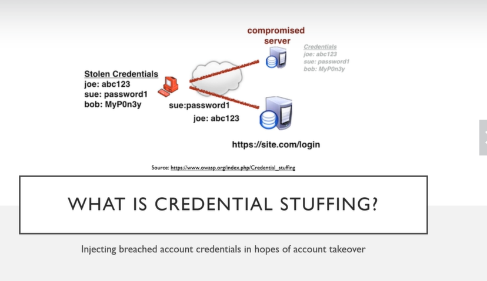

what is the difference between a brute force attack and password sprayin/credential stuffing?
Password spraying and credential stuffing are a bit more concise in their nature due to using credentials that have been included in a breach at some point, as opposed to brute forcing which is essentially blind guessing until something interesting happens.
-------------------------------------------------------------------------------------
Setting up Foxy Proxy
load foxy proxy then click add


now you can turn on burp suite
Turn off intercept So go to tesla.com and go to sign in page.
Turn on intercept and then write some fake email and password.
this will be burp suite output.

right click - send to intruder - go intruder tab - go positions - click clear - highlight username and passwords sections - click add

choose pitchfork as a attack type (sniper uses one parameter) then go to payloads paste tesla-user.txt over simple list and then change to payload set as 2 and paste tesla-password.txt (payload 1 is first highlighted in positions 2 is second highlighted)

and then START ATTACK

!!What we're looking for is a status code change of some sort. Maybe we see two hundreds here and we want like a 3 0 one which means a redirect we see a significant change in length.

!!is there any an easy way to verify whether sign in?
Yes!


PASSWORD SPRAYING
Password spraying is the art of using known user names without a known password.
now we'll select just username line and we'll throw usernames or emails at it. it's like credential stuffing, only difference is that in password spraying we are trying a possibly and common password over leaked usernames or emails.

The only downside to this is you are most likely attacking Active Directory accounts.
When you're attacking active directory accounts you want to be very careful because you could lock them out without even trying.
So if you're doing a pen test the best idea is to ask before you attack say hey how many attempts do you have unsuccessfully before I log out happens or a lockout happens. !!Because the worst thing you want to do is fire off ten of these in a row, lockout a bunch of users and cause of denial service. that is very very possible and very very easy to do so make sure you're not just firing these willy nilly that you have a good idea of the password policy the lockout policy etc. that will really help you when you do these attacks but you just want to do these kind of one or two at a time wait a few hours fire another one or two at a time and you should be good to go OK.
we should change attack type as sniper.

there will be no more payload btw just 1.

!!this is something you will come up in an interview as well so make sure you're very aware of it.